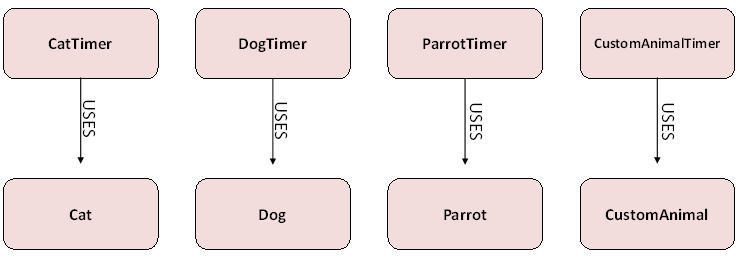
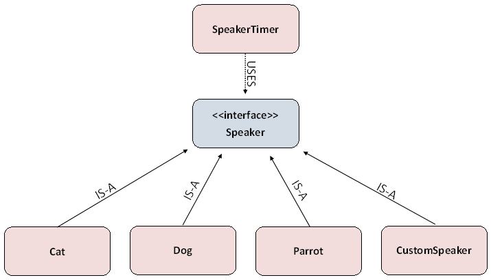

The use of the multiple timer classes is not very classy. Similar to in the notes, add a new interface to your Timers project named Speaker:
public interface Speaker
{
void speak();
}
Now that you have a Speaker interface available to you, change the Cat, Dog, and Parrot classes so that they all implement the Speaker interface. They already have the necessary method; they just need to make it official.
Now create a SINGLE timer class that does not specify Cat, Dog, or Parrot. This timer should only deal with the generic "Speaker" type, but it will still be almost identical to the other timers that you've written today.
Now add the following class to your project. Notice that the CatTimer, DogTimer, or ParrotTimer classes are all replaced by the single SpeakerTimer class. The only difference is which object is actually passed in as the parameter.
public class Runners
{
public static void mainCat()
{
Cat kat = new Cat();
SpeakerTimer timer = new SpeakerTimer(kat);
timer.launch();
}
public static void mainDog()
{
Dog pup = new Dog();
SpeakerTimer timer = new SpeakerTimer(pup);
timer.launch();
}
public static void mainParrot()
{
Parrot polly = new Parrot();
SpeakerTimer timer = new SpeakerTimer(polly);
timer.launch();
}
}
Run these methods to assure that they're functioning.
MORE SPEAKERS!
Now create your own class that implements Speaker. It's speak methods should do some sort of println that should change in some way, similar to the three classes I gave you.
Since we have the Speaker class, there is no need to create a new Timer. All you need is a main method that will construct your new object and pass it in as a parameter to a SpeakerTimer object.
What to upload for full credit:
- Your SpeakerTimer class
- Your new Speaker object
How Does the Speaker interface help us?
Before Speaker, every time you wanted to make a new animal, you would have to create ANOTHER Timer that uses that specific type.

AFTER the Speaker interface exists, we only need ONE timer that works with anything that is of type Speaker. This timer will now work for the animals we have as well as any in the future. We've essentially stopped the need to Copy/Paste constantly
